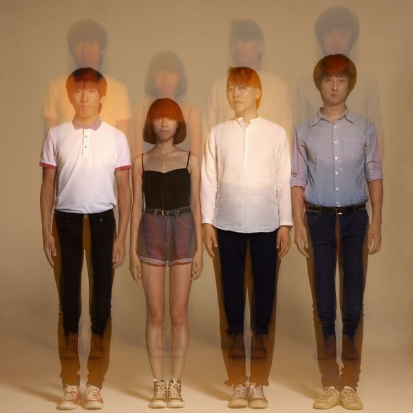
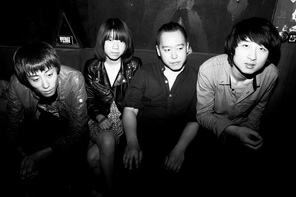

概览
发光曲线 Glow Curve
| 地区： | China 中国大陆 |
| 风格： | 电子乐 Electronica , 独立摇滚 Indie Rock |

档案
Glow Curve是一个电子电器术语词汇，意为发光曲线，乐队受早期后摇滚、前卫摇滚和电子乐的诸多启发，以复杂的逻辑和充沛的情感，具有诗意和哲学思考的歌词与建筑结构般演奏的融合，其延续了大不列颠前卫摇滚乐之脉络，又散发出水墨画般的东方特质。2012年签约摩登天空。2013年9月，乐队推出签约后的首张专辑《DEDICATE TO MIND/迷航》。

全新专辑《DEDICATE TO MIND/迷航》，2013年5月在陶然亭录音棚同期录制，由前木马乐队BASS手曹操担任录音师，后期由曹操和法国音乐制作人ERIC制作完成，封面出自上海鸭打鹅乐队的韩涵之手。乐队极具前瞻性的用分裂的思考堆砌起自身迷离又富于刺激性的音乐性格：暧昧与不确定的人声、极其美妙的旋律和忧郁面孔、大量的吉他回授噪音制造出重重幻景、对位与交错的乐器持续对话，呼应出凶猛的戏剧张力。凭借解构，实验与融合，呈现出一派迷人的东西方文化冲撞后的崭新气质，新、复杂、精巧、并令人惊奇。既有对传统的致敬，也充满对未知的憧憬。在摇滚乐已经丧失了真正反叛意识，并且很难从自身的陈旧模式和空洞姿态中自拔时，他们颠覆性的从种种潮流中破浪而出，在无尽创造力的艺术王国里着力于构建最纯粹的美。